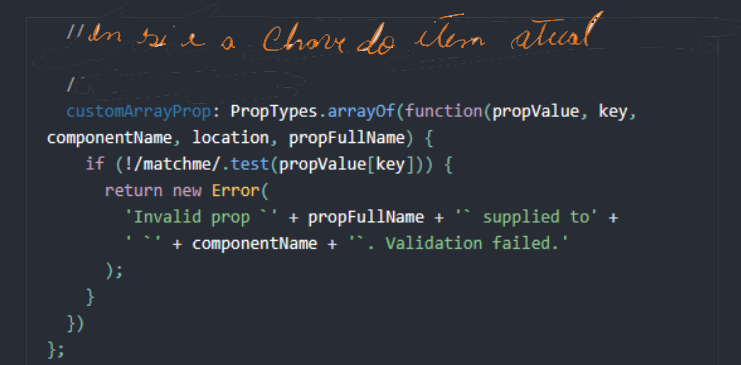
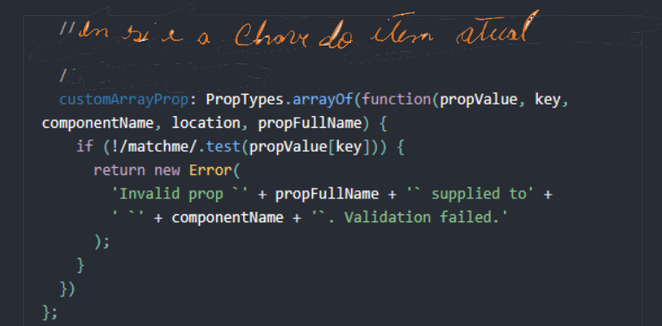

Prop-Types
Onde fica o prop-types do React?
A inspiração para esse artigo veio de algumas perguntas que encontrei pela internet sobre as 'mágicas' que percebemos no React durante o desenvolvimento. Inclusive essa pergunta foi feita em um tutorial que eu mostrava a criação de um componente. Pode parecer básico esse questionamento, na verdade muitos questionamentos são básico enquando são fermentados em nossa mente, na hora de explicar nem sempre é tão intuitivo.
O que é esse prop-types?
O nome é bem sugestivo depois de uma análise, podemos extrair do prop propriedade e do type a palavra tipo.
Acredite, já foi meio caminho andado!
Onde ele mora?
Onde ele mora?
Quando usamos o comando: npx create-react-app filename, para criar
nossa estrutura inicial do nosso projeto,
os scripts internos do React se encarregam de buscar lá no NPM (Node Package Manager) esse
pacote chamado
prop-types.
O prop-types no nosso projeto:
Depois que o React, de forma automática, baixa suas dependências, dentre elas o prop-types, ele é registrado
em dois arquivos:
(1) Na pasta node_modules/prop-types, nessa pasta temos de fato o módulo (código).
(2) Outro local é no package-lock.json, onde podemos ver o endereço do repositório @types (arquivo de
definição de tipos)
Se você colocar o endeço abaixo na sua barra de buscas: https://registry.npmjs.org/@types/prop-types/-/prop-types-15.7.3.tgz, você vai baixar o pacote de definição de tipos automaticamente.
Pra que serve?
Se você já usou ou sabe pra quer serve o TypeScript e o Flow (dentre outras soluções) é fácil entender pra
que serve o prop-types. Serve para você ter o controle do tipo das suas variáveis. Mas o benefício não é só
esse, o prop-types assim como o TypeScript (inclusive, recomendo usa-lo e o próprio Facebook também
recomenda).
(1) Pra usar, precisamos importar no nosso componente:
user: propTypes.object.isRequired
}
Como você pode imaginar, esse exemplo pode se extender pra outros tipos de variáveis e obrigatoriedades.
Exemplo 1:
PropTypes exporta uma variedade de validadores que podem ser usados para certificar que os dados que você recebe são válidos. Neste exemplo, utilizamos PropTypes.string. Quando um valor inválido for fornecido a uma prop, um alerta será exibido no console JavaScript. Por motivos de performance, propTypes é checado apenas em modo de desenvolvimento.
Aqui está um exemplo documentando os diferentes tipos de validadores fornecidos:

 
